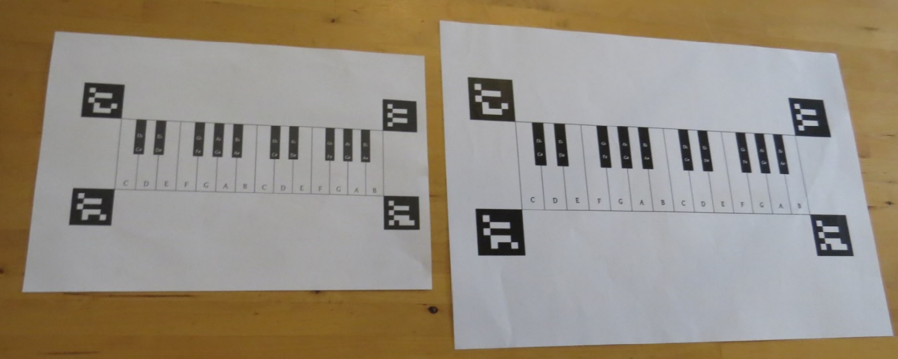

A short clip explaining our project
Code:
Our Main code can be found Here.
Workspace:
Project Components:
Algorithm and usage description:
In order to recieve our fully functional system, to start thing off we need to calibrate our PS3-EYE webcam and projector.
Using the ArUco markers and our webcam enable us to do exactly that.
After sufficient amount of markers are detected by the webcam the first calibration phase is completed,
the projection accuracy is directly affected by the amount of markers detected.
We are now able to add our printed piano.

On this stage we have all the data required in order to project the correct note to play,
now the fun part starts, and for that two modes are implemented in the system,
first mode: playing an entire song one note after another without any pauses.
second mode: interactive learning meaning that the correct note to play is projected and then by pressing that note its sound is heard and the next note is shown.
The code enables the user to add additional songs, or choose one of the songs already stored in the library.
Final Project schema:
Contact us:
Yakov Lanczner: yakovlan88@gmail.com
Merav Joseph: meravtyt@gmail.com